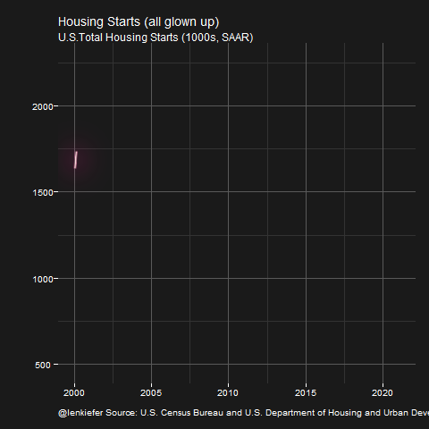
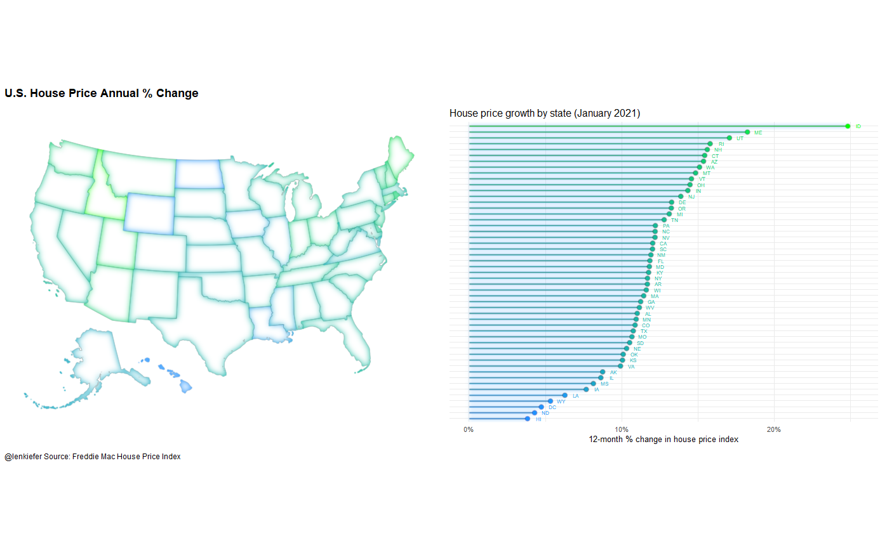
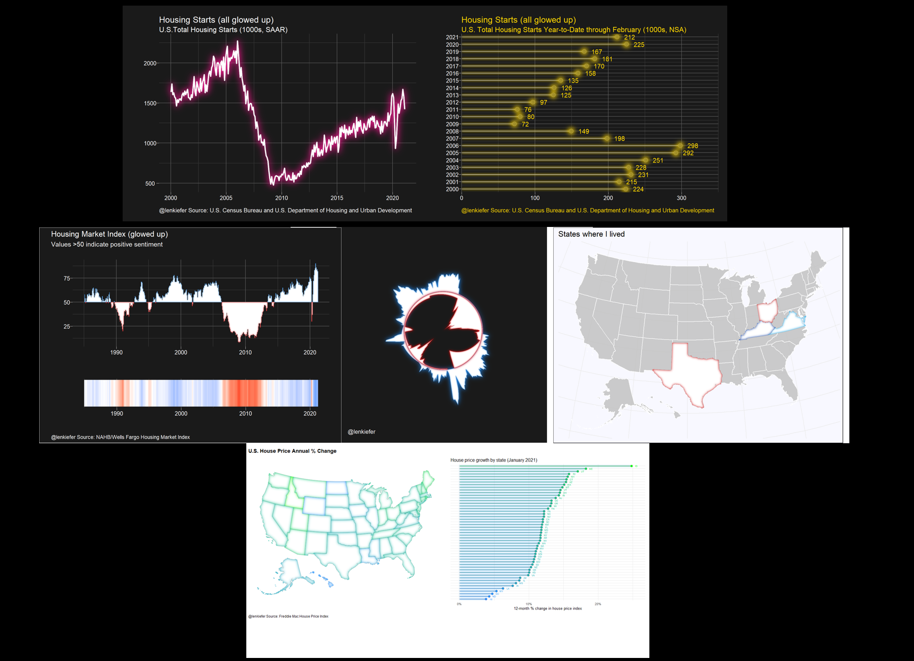

Recently I’ve been doing some experiments with the new R package ggfx. Earlier this month I shared an example, using ggfx for good. Since then, new features have been added to ggfx and I’ve found new applications for them.
In this post, we’ll take some standard charts and watch them glow up as we add new features from ggfx.
Having our charts glow up might not be the best idea, Bob Rudis suggests we’re converging on Excel level graphs. But it certainly is a fun idea. So let’s have at it.
In this post we’ll take several charts and have them all glow up using various ggfx features and other tricks. We’ll start with a line chart. and build up complexity from there. The plan is to glow up a
- line chart
- lollipop chart
- area chart
- map
Prep
We’ll be using R to create all the charts in this post. To get ready, we’ll need to load quite a few libraries. We’ll also need to collect data, but we’ll pick that up as we need it.
Reproducible code will be hidden in the details tab like so.
R prep
# load libraries ----
library(ggfx)
library(tidyverse)
library(data.table)
library(readxl)
library(albersusa)
library(gganimate)
library(httr)
library(patchwork)
library(albersusa)
library(tigris)
library(sf)
#my experimental package (needed for theme_dark2)
library(darklyplot)
# load my color scales
source("http://lenkiefer.com/img/favorites/len_color_scales.R")Shine a little light (line chart)
Let’s start with a simple line chart. We’ll plot trends in the seasonally adjusted annual rate of U.S. housing starts, published today. We can get the data from FRED using the HOUST mnemonic.
Let’s grab the data from FRED.
df <- tidyquant::tq_get("HOUST",get="economic.data",from="2000-01-01")We begin with a very simple, functional line chart.
ggplot(data=df, aes(x=date,y=price))+geom_line()+theme_minimal()+
theme(plot.caption=element_text(hjust=0))+
labs(x="",y="",
subtitle="U.S.Total Housing Starts (1000s, SAAR)",
title="Housing Starts (no glow)",
caption="@lenkiefer Source: U.S. Census Bureau and U.S. Department of Housing and Urban Development")
Nothing wrong with that, but we can apply some styling using ggfx::with_outer_glow.
ggplot(data=df, aes(x=date,y=price))+
with_outer_glow(geom_line(),colour="dodgerblue",sigma=5)+
theme_minimal()+
theme(plot.caption=element_text(hjust=0))+
labs(x="",y="",
subtitle="U.S.Total Housing Starts (1000s, SAAR)",
title="Housing Starts (glowing up)",
caption="@lenkiefer Source: U.S. Census Bureau and U.S. Department of Housing and Urban Development")
Now if we apply a dark theme we can see all chart all glowed up.
ggplot(data=df, aes(x=date,y=price))+
with_outer_glow(geom_line(color="white",size=1.1),colour="deeppink",sigma=15,expand=2)+
darklyplot::theme_dark2()+
theme(plot.caption=element_text(hjust=0))+
labs(x="",y="",
subtitle="U.S.Total Housing Starts (1000s, SAAR)",
title="Housing Starts (all glowed up)",
caption="@lenkiefer Source: U.S. Census Bureau and U.S. Department of Housing and Urban Development")
By the way, something seems to be wrong with gifski version 0.8.7, because when I animated it my chart got attacked by space aliens. Fortunately, their rays cannot penetrate my shield.

You’re a shooting star (lollipop chart)
Let’s now try a slightly more complicated chart. Let’s combine a segment with a point to make a lollipop chart.
We’ll stick with housing starts data, but combine year-to-date totals for nonseasonally adjusted starts through February (HOUSTSNA via FRED).
df2 <- tidyquant::tq_get("HOUSTNSA",get="economic.data",from="2000-01-01")
df2 <- group_by(df2,year=year(date)) %>% mutate(csum=cumsum(price)) %>% ungroup()First, our standard chart.
ggplot(data=filter(df2, month(date)==2), aes(x=csum, y=year,yend=year,xend=0))+
theme_minimal()+
theme(plot.caption=element_text(hjust=0))+
scale_y_continuous(breaks=2000:2021,expand=c(0.02,0.02))+
scale_x_continuous(expand=c(0.001,0.1),limits=c(0,350))+
geom_segment(color="dodgerblue")+
geom_point(size=3,alpha=0.75,color="dodgerblue")+
labs(x="",y="",
subtitle="U.S. Total Housing Starts Year-to-Date through February (1000s, NSA)",
title="Housing Starts (no glow)",
caption="@lenkiefer Source: U.S. Census Bureau and U.S. Department of Housing and Urban Development")
Now let’s let it sparkle a little.
# lolly 2
ggplot(data=filter(df2, month(date)==2), aes(x=csum, y=year,yend=year,xend=0))+
theme_minimal()+
theme(plot.caption=element_text(hjust=0))+
scale_y_continuous(breaks=2000:2021,expand=c(0.02,0.02))+
scale_x_continuous(expand=c(0.001,0.1),limits=c(0,350))+
with_outer_glow(geom_segment(color="dodgerblue"),
colour="gold", sigma=10)+
with_outer_glow( geom_point(size=3,alpha=0.75,color="dodgerblue"),
colour="gold", sigma=10)+
labs(x="",y="",
subtitle="U.S. Total Housing Starts Year-to-Date through February (1000s, NSA)",
title="Housing Starts (glowing up)",
caption="@lenkiefer Source: U.S. Census Bureau and U.S. Department of Housing and Urban Development")
MOAR SPARKLES!
ggplot(data=filter(df2, month(date)==2), aes(x=csum, y=year,yend=year,xend=0))+
darklyplot::theme_dark2()+
theme(plot.caption=element_text(hjust=0,color="gold"),
plot.title=element_text(color="gold"),
plot.subtitle=element_text(color="gold"),
text=element_text(color="gold"))+
scale_y_continuous(breaks=2000:2021,expand=c(0.02,0.02))+
scale_x_continuous(expand=c(0.001,0.1),limits=c(0,350))+
with_outer_glow(geom_segment(color="white",alpha=0.8),
colour="gold", sigma=5,expand=1)+
with_outer_glow(
with_inner_glow(
geom_point(size=3,alpha=0.75,color="gold"),
colour="white", sigma=1),
colour="gold", sigma=10,expand=5)+
geom_text(aes(label=round(csum,0)), colour="gold",nudge_x=10,hjust=0)+
labs(x="",y="",
subtitle="U.S. Total Housing Starts Year-to-Date through February (1000s, NSA)",
title="Housing Starts (all glowed up)",
caption="@lenkiefer Source: U.S. Census Bureau and U.S. Department of Housing and Urban Development")
Glowing Bar Chart
Do we have to doubt your commitment to sparkle motion?
Now let’s try an area chart. We’ll create a chart using the NAHB/Wells Fargo Housing Market Index. For this chart we’ll need to download an Excel spreadsheet.
Fortunately, we don’t have to open it or anything. We can let R do our work for us.
# hmi area chart ----
# data prep
url1 <- "https://www.nahb.org/-/media/NAHB/news-and-economics/docs/housing-economics/hmi/2021-03/table2-national-hmi-history-2021-03.xls"
invisible(GET(url1, write_disk(tf <- tempfile(fileext = ".xls"))))
df3 <- read_excel(tf,range="A3:M40") #read in data range A3:M40
colnames(df3)=c("year",month.abb)
df3<-
df3 %>%
reshape2::melt(id.vars="year") %>%
mutate(month=match(variable,month.abb)) %>%
mutate(date=as.Date(ISOdate(year,month,1))) First a standard bar chart.
# standard bar chart
ggplot(data=df3, aes(x=date,y=value-50))+
geom_col(data=filter(df3,value>50),fill="dodgerblue",color="dodgerblue")+
geom_col(data=filter(df3,value<=50),fill="red",color="red")+
theme_minimal()+
theme(plot.caption=element_text(hjust=0))+
scale_y_continuous(breaks=c(-50,-25,0,25,50),labels=seq(0,100,25))+
labs(x="",y="",
title="Housing Market Index (no glow)",
subtitle="Values >50 (blue) indicate positive sentiment",
caption="@lenkiefer Source: NAHB/Wells Fargo Housing Market Index")
Now make it sparkle!
gbar <-
ggplot(data=df3, aes(x=date,y=value-50))+
with_inner_glow(geom_col(data=filter(df3,value>50),fill="white"),
colour="dodgerblue",sigma=3)+
with_inner_glow(geom_col(data=filter(df3,value<50),fill="white"),
colour="red",sigma=3)+
darklyplot::theme_dark2()+
scale_y_continuous(breaks=c(-50,-25,0,25,50),labels=seq(0,100,25))+
labs(x="",y="")
gbar +
labs(x="",y="",
title="Housing Market Index (dark theme/ no glow)",
subtitle="Values >50 (blue) indicate positive sentiment",
caption="@lenkiefer Source: NAHB/Wells Fargo Housing Market Index")
We could enhance this graphic by adding a strip at the bottom.
gtile3 <-
ggplot(data=filter(df3,!is.na(value)),
aes(y=1,x=date,fill=value-50,color=value-50))+
geom_col()+
theme_dark2()+
scale_y_continuous(breaks=NULL)+
scale_fill_gradient2(high="dodgerblue", low="red",
limits=c(-50,50),
breaks=c(-50,-25,0,25,50),labels=seq(0,100,25),
name="Housing Market Index (>50 indicates positive sentiment)")+
scale_color_gradient2(high="dodgerblue", low="red",
limits=c(-50,50),
breaks=c(-50,-25,0,25,50),labels=seq(0,100,25),
name="Housing Market Index (>50 indicates positive sentiment)")+
theme(legend.position="none",legend.direction="horizontal")+
labs(x="",y="")
gbar/gtile3+plot_layout(heights=c(3,1))+
plot_annotation(title="Housing Market Index (glowed up)",
subtitle="Values >50 indicate positive sentiment",
caption="@lenkiefer Source: NAHB/Wells Fargo Housing Market Index",
theme=theme(plot.caption=element_text(hjust=0),
text=element_text(color="white"),
plot.background=element_rect(fill="gray10"))) If we wake up and feel like choosing violence (to data), you could apply a polar coordinate to this plot. It makes a good background image for video conferencing.
If we wake up and feel like choosing violence (to data), you could apply a polar coordinate to this plot. It makes a good background image for video conferencing.
# make a t-shirt graphic
ggplot(data=df3, aes(x=date,y=value-50))+
with_outer_glow(
with_inner_glow(geom_area(data=filter(df3,value>50),fill="white"),
colour="dodgerblue"),
sigma=10,colour="dodgerblue")+
with_outer_glow(with_inner_glow(geom_area(data=filter(df3,value<50),fill="white"),colour="red"),
sigma=5,colour="red")+
theme_dark2()+
theme(axis.ticks=element_blank(),
panel.grid.major=element_blank(),
panel.grid.minor=element_blank(),
axis.text.x=element_blank(),
axis.text.y=element_blank(),
axis.title.x=element_blank(),
axis.title.y=element_blank())+
coord_polar(start=3)+
labs(caption="@lenkiefer")
Glowy maps
Let’s make some glowy maps. The ggfx::with_inner_glow function can be applied to polygons to create a nice shading effect. Let’s first do it without any data other than our base map.
Let’s create a map of the US with the states where I have lived (KY,OH,TX,VA) highlighted. But instead of just filling the polygon with a color, I want to have an inner glow effect.
###########################################
# load albers usa maps
# via https://github.com/hrbrmstr/albersusa
###########################################
us_sf <- usa_sf("laea") %>% mutate(state_abbv=iso_3166_2)
cty_sf <- counties_sf("laea")
st_list <- c("VA","KY","OH","TX")
paint_map <- function(st="CA",mycolor="red"){
with_inner_glow(geom_sf(fill = "white",
data= .%>% filter(state_abbv==st),
color = "#ffffff"),
colour=mycolor,sigma=5)
}
us_sf %>%
ggplot(aes())+
geom_sf(fill = "grey",
alpha=.8,
color = "#ffffff")+
map(st_list, paint_map) +
theme_minimal()+
theme(plot.background=element_rect(fill="ghostwhite"),
legend.position="top",
legend.direction="horizontal",
legend.key.width=unit(1.25,"cm"),
axis.text.x=element_blank(),
axis.text.y=element_blank())+
labs(title="States where @lenkiefer lived")
It may strike you as odd why I would create a function paint_map above which takes two arguments, state and color. But we can map directly color to the plot. So for example, we can color code the states by special colors.
mycolors=c("#009BE4", #Freddie Mac Blue
"#0033a0", #UK Wildcat blue
#https://www.uky.edu/prmarketing/sites/www.uky.edu.prmarketing/files/Graphic%20Standards%20M9-16.pdf
"#bb0000", #OSU Scarlet https://brand.osu.edu/color/
"#CC0000") # Texas Tech Scarlet https://www.texastech.edu/identityguidelines/colors.php
us_sf %>%
ggplot(aes())+
geom_sf(fill = "grey",alpha=.8,
color = "#ffffff")+
map2(st_list,mycolors,paint_map) +
theme_minimal()+
theme(plot.background=element_rect(fill="ghostwhite"),
legend.position="top",
legend.direction="horizontal",
legend.key.width=unit(1.25,"cm"),
axis.text.x=element_blank(),
axis.text.y=element_blank())+
labs(title="States where @lenkiefer lived")
Now we can apply this same strategy to map data to the glowing interior. Let’s do that for house prices. We’ll transform the 12-month percent change in house prices in January 2021 to a 0 to 1 scale. Then we’ll use a color map to assign colors to ggfx::with_inner_glow. We have to do this because as far as I understand we can’t map data to the colour aesthetic of ggfx::with_inner_glow.
In summary, we’ll download the Freddie Mac House Price Index (currently available through January 2021) and compute the 12-month percent change for each state (plus the District of Columbia) in January of 2021. Then we’ll assign a color for each state based on their house price index using a gradient color scale going from dodgerblue (hex #1e90ff ) to green.
We’ll end up with a map like the one above, but with the warm glowly interior of each state radiating at a color corresponding to it’s house price growth rate. Because there’s no easy way to construct a legend, we’ll also map the color to a standard ggplot lollypop (geom_point + geom_segment like above) and use that as the legend in a composite graph.
# get house price data
dt <- fread("http://www.freddiemac.com/fmac-resources/research/docs/fmhpi_master_file.csv")
dt <- data.table(dt)[,":="(hpa12=Index_SA/shift(Index_SA,12)-1,
hpa3 = (Index_SA/shift(Index_SA,3))**4 -1 ),
.(GEO_Type,GEO_Name)
]
dt[,date:=as.Date(ISOdate(Year,Month,15))]
dt[, hpa3_lag3:=shift(hpa3,3), by=.(GEO_Type,GEO_Name)]
dts <- dt[date==max(date) & GEO_Type=="State",]
dtstate<-dt[date==max(date) & GEO_Type=="State",]
dtc <- dt[date==max(date) & GEO_Type=="CBSA",]
mydate <- format(max(dt$date),"%b %Y")
## Scale your values to range between 0 and 1
rr <- range(dts$hpa12)
svals <- (dts$hpa12-rr[1])/diff(rr)
f <- colorRamp(c( "dodgerblue","green"))
colors <- rgb(f(svals)/255)
dts$mycol <- colors
gbar <-
ggplot(data=dts, aes(x=hpa12,xend=0,color=mycol,
yend=fct_reorder(GEO_Name,hpa12),
y=fct_reorder(GEO_Name,hpa12)))+
with_outer_glow(geom_segment(),colour="dodgerblue")+
with_bloom(geom_point(size=2),colour="dodgerblue")+
scale_color_identity()+
scale_x_continuous(labels=scales::percent,expand=c(0.01,.01))+
geom_text(nudge_x=0.0075,size=2,aes(label=GEO_Name))+
theme_minimal(base_size=10)+
theme(axis.text.y=element_blank())+
labs(x="12-month % change in house price index",y="",
title="House price growth by state (January 2021)")
gmap <-
us_sf %>%
ggplot(aes())+
geom_sf(fill = "grey",alpha=.8,
color = "#ffffff")+
theme_void()+
map2(dts$GEO_Name,dts$mycol, myf)
gmap+gbar+plot_annotation(caption="@lenkiefer Source: Freddie Mac House Price Index",
theme=theme(plot.caption=element_text(hjust=0),
plot.title=element_text(face="bold")),
title="U.S. House Price Annual % Change")
And there we go a glowy map!
Summary: glowed up dataviz
Let’s take a moment to reflect on all the charts we glowed up today.

These charts are fun, I think they look pretty good. In the case of the map in particular I think the inner glow helps tell the data story without overwhelming you with color. I’m planning to keep experiment with these effects.
Also note that ggfx is in development so the current code might not work with future verions (sorry future Len). For this post I used this version of ggfx:
packageVersion("ggfx")## [1] '0.0.0.9000'For good or ill, the immense power of these #rstats charts are now in your hands. Shine on!